本试卷分选择题和非选择题两部分，满分100分，考试时间75分钟。
一、选择题：本题共12小题，每小题2分，共24分。在每小题给出的四个选项中，只有一项是符合题目要求的。
二、选择题：本题共4小题，每小题4分，共16分。在每小题给出的四个选项中，有一项或多项符合题目要求。全部选对的得4分，选对但不全的得2分，有选错的得0分。
三、非选择题：本题共5小题，共60分。第17—21题均须作答。
相关题目：第 1 题 · 第 2 题 · 第 3 题 · 第 4 题 · 第 5 题 · 第 6 题 · 第 7 题 · 第 8 题 · 第 9 题 · 第 10 题 · 第 11 题 · 第 12 题 · 第 13 题 · 第 14 题 · 第 15 题 · 第 16 题 · 第 17 题 · 第 18 题 · 第 19 题 · 第 20 题 · 第 21 题
返回原卷作答与计分说明
题目与已知条件
南极雌帝企鹅产蛋后，由雄帝企鹅负责孵蛋，孵蛋期间不进食。下列叙述错误的是（）
A. 帝企鹅蛋的卵清蛋白中N元素的质量分数高于C元素
B. 帝企鹅的核酸、多糖和蛋白质合成过程中都有水的产生
C. 帝企鹅蛋孵化过程中有mRNA和蛋白质种类的变化
D. 雄帝企鹅孵蛋期间主要靠消耗体内脂肪以供能
查看原题图／原始配图
原始配图 1 · 第1题原题图版
所用高中知识
C是构成生物大分子骨架的主要元素；脂肪是重要储能物质。发育中的细胞分化伴随选择性表达。
读题与思路
蛋白质质量分数通常碳高于氮，A反向。核酸/多糖/蛋白聚合有脱水，胚胎分化使转录本与蛋白种类改变，禁食消耗脂肪，余项成立。
分步解析
- A：卵清蛋白中碳元素质量比例通常高于氮，题述相反。
- B：核酸、多糖、蛋白质等大分子合成都可涉及单体缩合和水生成，符合高中模型。
- C：孵化发育时不同基因被选择性表达，mRNA与蛋白质种类可变化。
- D：不进食阶段主要动用脂肪储备，脂肪能量密度较高。
检查与易错点
“N是蛋白质的特征元素之一”不等于“N的质量占比最高”。
本题来源：paper · doc-supplied · web-current-pdf
返回原卷作答与计分说明
题目与已知条件
关于细胞结构与功能，下列叙述错误的是（ ）
A. 细胞骨架被破坏，将影响细胞运动、分裂和分化等生命活动
B. 核仁含有DNA、RNA和蛋白质等组分，与核糖体的形成有关
C. 线粒体内膜含有丰富的酶，是有氧呼吸生成CO2的场所
D. 内质网是一种膜性管道系统，是蛋白质的合成、加工场所和运输通道
查看原题图／原始配图
原始配图 1 · 第2题原题图版
所用高中知识
细胞骨架参与形态维持和运动；核仁与rRNA合成和核糖体组装有关；呼吸过程中CO₂生成与水生成的场所不同。
读题与思路
有氧呼吸产生CO₂在粒体基质而非内膜，C错；内膜主要负责电子传递与氧化磷酸化。细胞骨架、核仁核酸蛋白组成、内质网加工运输的说法均成立。
分步解析
- A：破坏细胞骨架影响运动、分裂及分化相关过程，正确。
- B：核仁含DNA、RNA和蛋白质，与核糖体形成有关，正确。
- C：有氧呼吸中CO₂主要在第二阶段的线粒体基质生成；内膜主要进行电子传递及水、ATP的形成，错误。
- D：粗面内质网及其附着核糖体参与蛋白合成加工运输，题述正确。
检查与易错点
有氧呼吸第一阶段不释放CO₂；不能把“线粒体是有氧呼吸主要场所”缩写成所有反应都在内膜。
本题来源：paper · doc-supplied · web-current-pdf
返回原卷作答与计分说明
题目与已知条件
（2分）
酗酒危害人类健康。乙醇在人体内先转化为乙醛，在乙醛脱氢酶2（ALDH2）作用下再转化为乙酸，最终转化成CO2和水。头孢类药物能抑制ALDH2的活性。ALDH2基因某突变导致ALDH2活性下降或丧失。在高加索人群中该突变的基因频率不足5%，而东亚人群中高达30%～50%。下列叙述错误的是（ ）
版本说明：此处数值依印刷题面图为30%～50%；部分Word转录版仅写30%。两版本不改变本题判断。
A.相对于高加索人群，东亚人群饮酒后面临的风险更高
B.患者在服用头孢类药物期间应避免摄入含酒精的药物或食物
C.ALDH2基因突变人群对酒精耐受性下降，表明基因通过蛋白质控制生物性状
D.饮酒前口服ALDH2酶制剂可催化乙醛转化成乙酸，从而预防酒精中毒
所用高中知识
基因通过控制酶影响代谢和性状。乙醛脱氢酶促进乙醛转为乙酸；口服普通蛋白质一般会被消化，并非直接进入细胞作原有酶。
读题与思路
缺ALDH2使有毒乙醛难代谢；头孢又抑酶，饮酒风险升。ALDH2是蛋白，口服会被消化且不能据此直接发挥细胞内催化作用，D错。
分步解析
- ALDH2活性低使乙醛清除困难，题给东亚该变异频率较高，群体层面风险相应增加，A成立。
- 按题给头孢类抑制ALDH2的信息，避免同时摄入酒精可降低该风险，B成立。
- 突变影响酶活性，再改变代谢，说明基因通过蛋白质影响性状，C成立。
- 普通口服ALDH2作为蛋白质会受消化，不能直接递送到细胞内发挥所述作用，因此D的预防推断不成立。
检查与易错点
本题解释考试所给简化模型，不据群体频率判断具体个人耐受程度，也不提供饮酒或用药建议。
本题来源：paper · doc-supplied · web-current-pdf
返回原卷作答与计分说明
题目与已知条件
“油菜花开陌野黄，清香扑鼻蜂蝶舞。”菜籽油是主要的食用油之一，秸秆和菜籽饼可作为肥料还田。下列叙述错误的是（）
A. 油菜花通过物理、化学信息吸引蜂蝶
B. 蜜蜂、蝴蝶和油菜之间存在协同进化
C. 蜂蝶与油菜的种间关系属于互利共生
D. 秸秆和菜籽饼还田后可提高土壤物种丰富度
查看原题图／原始配图
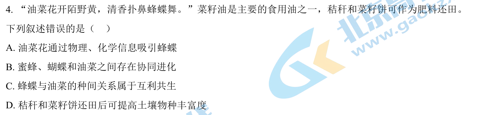
原始配图 1 · 第4题原题图版所用高中知识
花色属于物理信息，气味属于化学信息。相互有利但可独立生活的种间关系按本题教材分类为原始合作。
读题与思路
花色和香气分别物理/化学信息，传粉关系可协同进化，还田有机物可支持土壤多样性。蜂蝶与油菜不是紧密共生而为原始合作，C错误。
分步解析
- 花色香味可吸引传粉者，A正确。
- 植物和传粉动物长期相互影响，存在协同进化，B正确。
- 蜂蝶与油菜并非彼此唯一依赖的生存组合，通常归为原始合作，C将其称作互利共生不合该教材分类。
- 还田有机物增加分解者及相关生物的资源，有利于提升土壤生物丰富度，D正确。
检查与易错点
不同教材对互利关系术语分层可能不同；本题采用将“原始合作”与狭义“互利共生”区分的分类。
本题来源：paper · doc-supplied · web-current-pdf
返回原卷作答与计分说明
题目与已知条件
食品保存有干制、腌制、低温保存和高温处理等多种方法。下列叙述错误的是（）
A. 干制降低食品的含水量，使微生物不易生长和繁殖，食品保存时间延长
B. 腌制通过添加食盐、糖等制造高渗环境，从而抑制微生物的生长和繁殖
C. 低温保存可抑制微生物的生命活动，温度越低对食品保存越有利
D. 高温处理可杀死食品中绝大部分微生物，并可破坏食品中的酶类
查看原题图／原始配图
原始配图 1 · 第5题原题图版
所用高中知识
微生物繁殖需要水和适宜温度；高渗、干燥、低温可抑制生长，加热可杀灭微生物并使酶失活。食品本身也可能受冷冻损伤。
读题与思路
干燥缺水、高盐高糖使微生物难长，高温杀菌破酶；低温有适宜范围，过低会损伤食品，不能越低越好，C错。
分步解析
- 干制减少可利用水分，微生物较难繁殖，A正确。
- 食盐糖造成高渗使细胞失水，抑制微生物生长，B正确。
- 低温虽抑制代谢，但过低可使某些果蔬冻伤、品质下降，不是越低越有利，C错误。
- 高温可杀死绝大多数微生物并破坏酶活性，D正确。
检查与易错点
抑制繁殖并不等于杀灭所有微生物；冷藏也不能无限期保证食品安全。
本题来源：paper · doc-supplied · web-current-pdf
返回原卷作答与计分说明
题目与已知条件
甲状旁腺激素（PTH）和降钙素（CT）可通过调节骨细胞活动以维持血钙稳态，如图所示。下列叙述错误的是（）
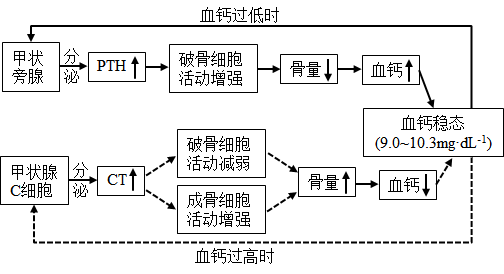
A. CT可促进成骨细胞活动，降低血钙
B. 甲状旁腺功能亢进时，可引起骨质疏松
C. 破骨细胞活动异常增强，将引起CT分泌增加
D. 长时间的高血钙可导致甲状旁腺增生
查看原题图／原始配图
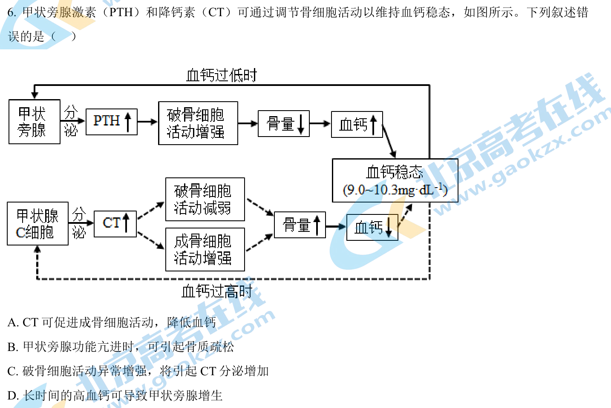
原始配图 1 · 第6题原题图版所用高中知识
PTH增强骨钙释放使血钙升高；CT促进成骨、抑制破骨使血钙降低。高低血钙对两条调节途径产生反馈。
读题与思路
PTH促破骨升血钙，CT抑破骨促成骨降血钙；破骨异常增可经高钙刺激CT。长期高血钙反馈抑PTH，不能由图推甲状旁腺增生，D错。
分步解析
- CT促进成骨细胞活动，使钙进入骨组织，血钙下降，A正确。
- 甲状旁腺亢进使PTH过多、骨吸收增强，可致骨质疏松，B正确。
- 破骨活动过强升高血钙，继而促进CT分泌，C正确。
- 高血钙会抑制PTH调节途径，不能按图推出甲状旁腺增生，D错误。
检查与易错点
甲状旁腺、甲状腺C细胞是不同结构；PTH、CT也不等于甲状腺激素。
本题来源：paper · doc-supplied · web-current-pdf
返回原卷作答与计分说明
题目与已知条件
基因Bax和Bcl-2分别促进和抑制细胞凋亡。研究人员利用siRNA干扰技术降低TRPM7基因表达，研究其对细胞凋亡的影响，结果如图所示。下列叙述错误的是（）
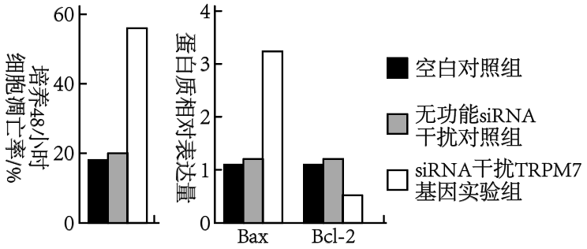
A. 细胞衰老和细胞凋亡都受遗传信息的调控
B. TRPM7基因可能通过抑制Bax基因的表达来抑制细胞凋亡
C. TRPM7基因可能通过促进Bcl-2基因的表达来抑制细胞凋亡
D. 可通过特异性促进癌细胞中TRPM7基因的表达来治疗相关癌症
查看原题图／原始配图
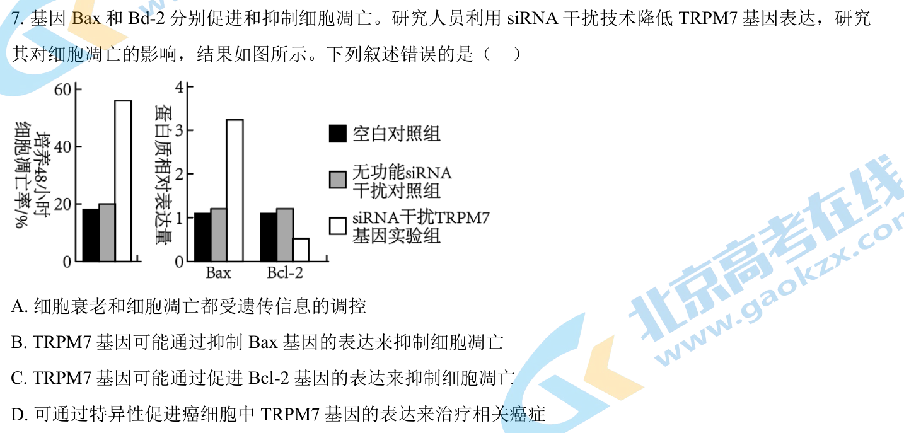
原始配图 1 · 第7题原题图版所用高中知识
Bax促凋亡，Bcl-2抑凋亡；siRNA降低目标基因表达，可比较其下游变化。设置无功能siRNA组可控制干扰操作本身影响。
读题与思路
抑TRPM7后Bax升、Bcl-2降、凋亡升，说明原TRPM7可能抑Bax并促Bcl-2以抑凋亡；促进其表达反而保护癌细胞，D错误。
分步解析
- 实验组凋亡率升高、Bax升高、Bcl-2下降，说明TRPM7总体上与抑制凋亡有关。
- TRPM7可能抑制Bax表达，也可能促进Bcl-2表达，B和C均与数据相容。
- 衰老与凋亡均受到遗传信息调控，A正确。
- 若目的是促进癌细胞凋亡，促进TRPM7表达可能起相反作用，D错误，应研究抑制途径而非促进。
检查与易错点
相关变化支持“可能”，不等于已经证明所有直接调控步骤。
本题来源：paper · doc-supplied · web-current-pdf
返回原卷作答与计分说明
题目与已知条件
盐碱胁迫下植物应激反应产生的H2O2对细胞有毒害作用。禾本科农作物AT1蛋白通过调节细胞膜上PIP2s蛋白磷酸化水平，影响H2O2的跨膜转运，如图所示。下列叙述错误的是（）
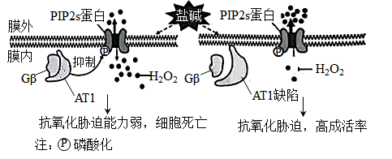
A.细胞膜上PIP2s蛋白高磷酸化水平是其提高H2O2外排能力所必需的
B.PIP2s蛋白磷酸化被抑制，促进H2O2外排，从而减轻其对细胞的毒害
C. 敲除AT1基因或降低其表达可提高禾本科农作物的耐盐碱能力
D. 从特殊物种中发掘逆境胁迫相关基因是改良农作物抗逆性的有效途径
查看原题图／原始配图
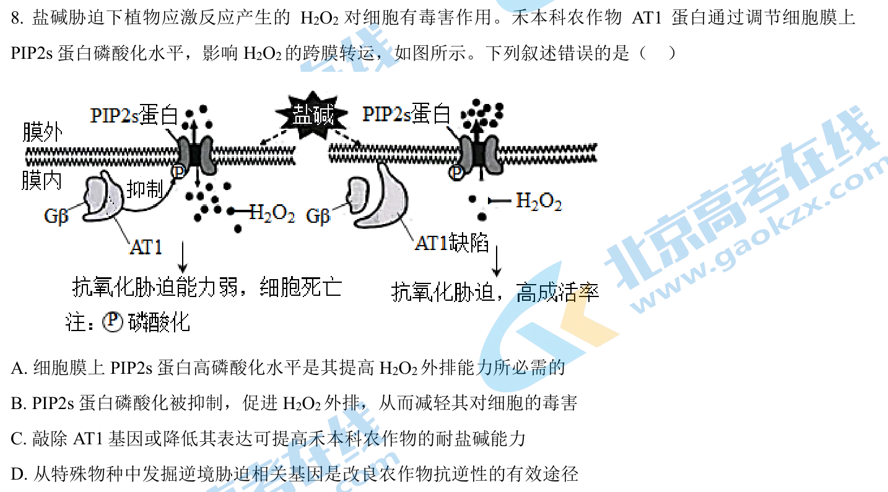
原始配图 1 · 第8题原题图版所用高中知识
H₂O₂过量可造成氧化损伤。膜蛋白的磷酸化水平可改变运输能力；基因敲除可解除抑制。
读题与思路
AT1抑PIP2s磷酸化时H₂O₂在胞内多，缺AT1后磷酸化/外排改善而存活高，B把抑制磷酸化的效应倒写。A/C/D依图可成立。
分步解析
- AT1正常时抑制PIP2s磷酸化，H₂O₂留在胞内较多，氧化胁迫强。
- AT1缺陷时PIP2s磷酸化水平较高，外排增强，存活率提高，A、C成立。
- B把磷酸化受抑制后外排方向写反，因此错误。
- 利用特殊物种的抗逆相关基因改良作物，是可行的研究途径，D正确。
检查与易错点
本题PIP2s是膜蛋白，不因字母相似而当作其他磷脂分子；用给定图的正负调节关系作答。
本题来源：paper · doc-supplied · web-current-pdf
返回原卷作答与计分说明
题目与已知条件
某X染色体显性遗传病由SHOX基因突变所致，某家系中一男性患者与一正常女性婚配后，生育了一个患该病的男孩。究其原因，不可能的是（）
A. 父亲的初级精母细胞在减数分裂I四分体时期，X和Y染色体片段交换
B. 父亲的次级精母细胞在减数分裂Ⅱ后期，性染色体未分离
C. 母亲的卵细胞形成过程中，SHOX基因发生了突变
D. 该男孩在胚胎发育早期，有丝分裂时SHOX基因发生了突变
查看原题图／原始配图
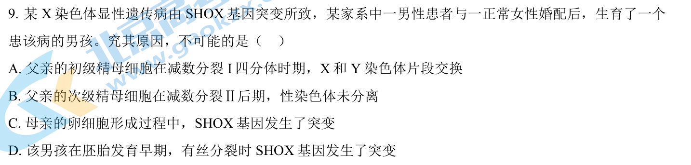
原始配图 1 · 第9题原题图版所用高中知识
正常情况下男性将Y给儿子、X给女儿。减数分裂Ⅰ分离同源性染色体，Ⅱ分离姐妹染色单体；突变也可能改变母源X。
读题与思路
减Ⅱ不分离只产生XX/YY或缺性染色体的精子，不能把父X突变装到正常Y儿子；B不可能。四分体交换、卵形成或胚早突变均能构造，不能把父传子一律排除。
分步解析
- A：若父亲X上的相关片段交换到Y，含致病片段的Y可传给儿子，可能。
- B：正常减Ⅰ后每个次级精母细胞只含X或Y。减Ⅱ不分离可产生XX、YY或无性染色体精子，不能由此产生同时携父源致病X和Y的XY精子，故不能解释该患病男孩。
- C：卵细胞形成时基因新突变，可把致病X传给儿子。
- D：胚胎早期体细胞突变也可能导致患病表现。
检查与易错点
若是减数分裂Ⅰ性染色体不分离，推论会不同；必须核对题中明确写的Ⅱ后期。
本题来源：paper · doc-supplied · web-current-pdf
返回原卷作答与计分说明
题目与已知条件
关于激素、神经递质等信号分子，下列叙述错误的是（ ）
A. 一种内分泌器官可分泌多种激素
B. 一种信号分子可由多种细胞合成和分泌
C. 多种信号分子可协同调控同一生理功能
D. 激素发挥作用的前提是识别细胞膜上的受体
查看原题图／原始配图
原始配图 1 · 第10题原题图版
所用高中知识
信号分子需受体识别，受体可在膜表面，也可在细胞内。内分泌器官和信号种类并非一一对应。
读题与思路
内分泌腺可多激素、同信号可多细胞产生、多信号可协同；有的激素受体在胞内，并非必在膜上，D错误。
分步解析
- 垂体等器官可分泌多种激素，A正确。
- 同种递质或信号分子可由不同细胞合成分泌，B正确。
- 不同信号分子能共同调控同一功能，如多种激素参与生长发育，C正确。
- 脂溶性激素等可与细胞内受体作用，D把所有激素受体限定在膜上，错误。
检查与易错点
“靶细胞具有受体”不等于“靶细胞膜上具有该受体”。
本题来源：paper · doc-supplied · web-current-pdf
返回原卷作答与计分说明
题目与已知条件
某少年意外被锈钉扎出一较深伤口，经查体内无抗破伤风的抗体。医生建议使用破伤风类毒素（抗原）和破伤风抗毒素（抗体）以预防破伤风。下列叙述正确的是（）
A. 伤口清理后，须尽快密闭包扎，以防止感染
B. 注射破伤风抗毒素可能出现的过敏反应属于免疫防御
C. 注射破伤风类毒素后激活的记忆细胞能产生抗体
D. 有效注射破伤风抗毒素对人体的保护时间长于注射破伤风类毒素
查看原题图／原始配图
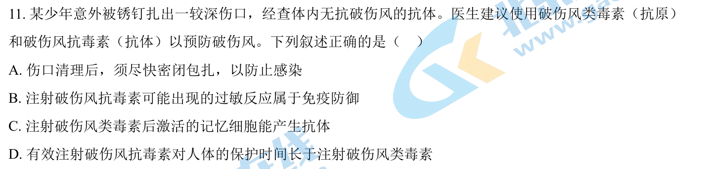
原始配图 1 · 第11题原题图版所用高中知识
抗毒素提供现成抗体，见效较快但保护相对短；类毒素作为抗原诱导主动免疫和记忆。抗体由浆细胞分泌。
读题与思路
破伤风厌氧，密闭伤口不利防范；被动抗体可能过敏属防御功能异常，B成立。记忆细胞须分化浆细胞才分泌，抗毒素保护短于建立记忆的类毒素，C/D错误。
分步解析
- A：破伤风杆菌为厌氧菌，深伤口不应简单以“尽快密闭”作为防感染依据，错误。
- B：对外来抗毒素成分的过敏属于免疫防御过强的表现，按本题分类正确。
- C：记忆细胞需增殖分化为浆细胞后由后者产生抗体，记忆细胞不直接分泌抗体。
- D：现成抗体逐渐降解，保护时间通常短于能建立免疫记忆的类毒素接种，错误。
检查与易错点
此题是免疫机制比较，实际外伤清创、疫苗和抗毒素使用需由医务人员判断，不能照选项自行处理。
本题来源：paper · doc-supplied · web-current-pdf
返回原卷作答与计分说明
题目与已知条件
细菌glg基因编码的UDPG焦磷酸化酶在糖原合成中起关键作用。细菌糖原合成的平衡受到CsrAB系统的调节。CsrA蛋白可以结合glgmRNA分子，也可结合非编码RNA分子CsrB,如图所示。下列叙述错误的是（ ）
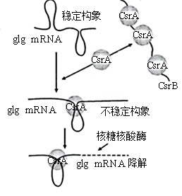
A.细菌glg基因转录时，RNA聚合酶识别和结合glg基因的启动子并驱动转录
B. 细菌合成UDPG焦磷酸化酶的肽链时，核糖体沿glgmRNA从5'端向3'端移动
C. 抑制CsrB基因的转录能促进细菌糖原合成
D. CsrA蛋白都结合到CsrB上，有利于细菌糖原合成
查看原题图／原始配图
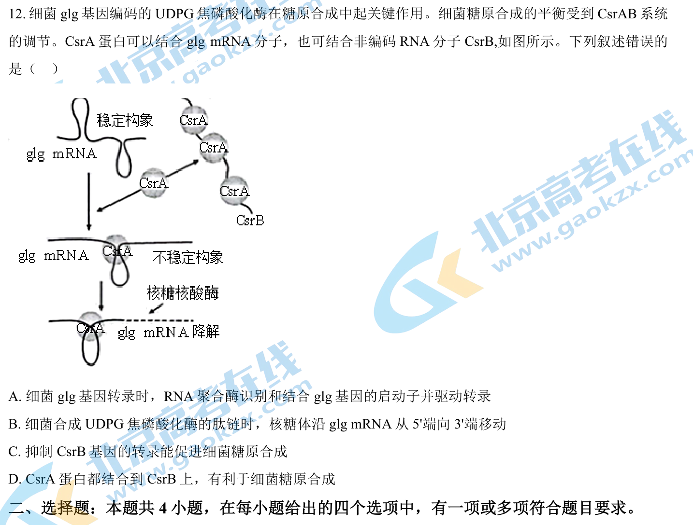
原始配图 1 · 第12题原题图版所用高中知识
非编码RNA也可通过结合调控蛋白影响基因表达。mRNA稳定性决定可翻译的模板量；RNA聚合酶识别启动子，核糖体沿mRNA的5′→3′方向移动。
读题与思路
CsrA结合glg mRNA使其易降解，CsrB吸附CsrA起解除抑制作用。抑CsrB转录使更多CsrA降解glg mRNA，减少糖原合成，因此C错。转录启动子识别、核糖体5′→3′移动均正确。
分步解析
- CsrA结合glg mRNA，使其构象不稳定并被核糖核酸酶降解，最终酶量下降。
- 抑制CsrB转录使CsrB减少，更多游离CsrA结合glg mRNA，糖原合成下降而非上升，所以C错误。
- CsrA全部结合CsrB时，glg mRNA较少受破坏，有利糖原合成，D正确。
- A的启动子识别与B的核糖体移动方向均正确。
检查与易错点
细菌没有细胞核，本题转录不发生在“细胞核”。非编码RNA不能翻译成蛋白质，但不代表没有功能。
本题来源：paper · doc-supplied · web-current-pdf
返回原卷作答与计分说明
题目与已知条件
党的二十大报告指出：我们要推进美丽中国建设，坚持山水林田湖草沙一体化保护和系统治理，统筹产业结构调整、污染治理、生态保护，应对气候变化，协同推进降碳、减污、扩绿、增长，推进生态优先、节约集约、绿色低碳发展。下列叙述错误的是（）
A. 一体化保护有利于提高生态系统的抵抗力稳定性
B. 一体化保护体现了生态系统的整体性和系统性
C. 一体化保护和系统治理有助于协调生态足迹与生态承载力的关系
D. 运用自生原理可以从根本上达到一体化保护和系统治理
查看原题图／原始配图
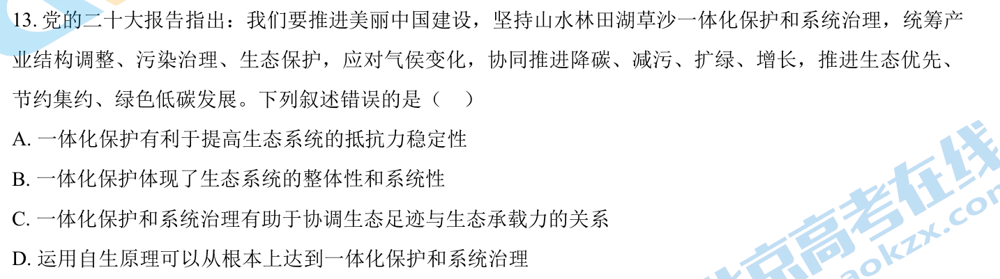
原始配图 1 · 第13题原题图版所用高中知识
生态工程通常综合运用整体、协调、循环、自生等原理。生态足迹反映资源需求与废物吸纳需求，承载力反映供给能力。
读题与思路
一体化保护兼顾关联、提高稳定性、协调生态足迹与承载力；不能仅靠自生这一项就从根本完成系统治理，D过度概括错误。
分步解析
- 保护不同生境及其联系有助维持多样性、自我调节能力和抵抗力稳定性，A正确。
- 山水林田湖草沙相互联系，应整体考虑，B正确。
- 治理可降低资源环境压力并改善供给，有助协调足迹与承载力，C正确。
- D声称仅运用自生原理便能从根本上实现全部治理，忽略整体与协调等要求，错误。
检查与易错点
自生是发挥生态系统自组织调节能力，并不意味着无需统筹产业、污染及社会经济因素。
本题来源：paper · doc-supplied · web-current-pdf
返回原卷作答与计分说明
题目与已知条件
盐碱化是农业生产的主要障碍之一。植物可通过质膜H+泵把Na+排出细胞，也可通过液泡膜H+泵和液泡膜NHX载体把Na+转入液泡内，以维持细胞质基质Na+稳态。下图是NaCl处理模拟盐胁迫，钒酸钠（质膜H+泵的专一抑制剂）和甘氨酸甜菜碱（GB）影响玉米Na+的转运和相关载体活性的结果。下列叙述正确的是（）
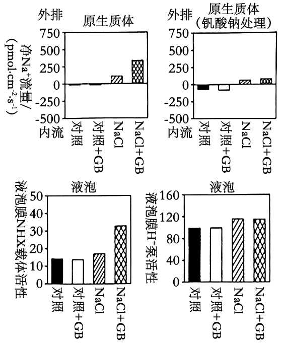
A. 溶质的跨膜转运都会引起细胞膜两侧渗透压的变化
B.GB可能通过调控质膜H+泵活性增强Na+外排，从而减少细胞内Na+的积累
C.GB引起盐胁迫下液泡中Na+浓度的显著变化，与液泡膜H+泵活性有关
D.盐胁迫下细胞质基质Na+排出细胞或转入液泡都能增强植物的耐盐性
查看原题图／原始配图
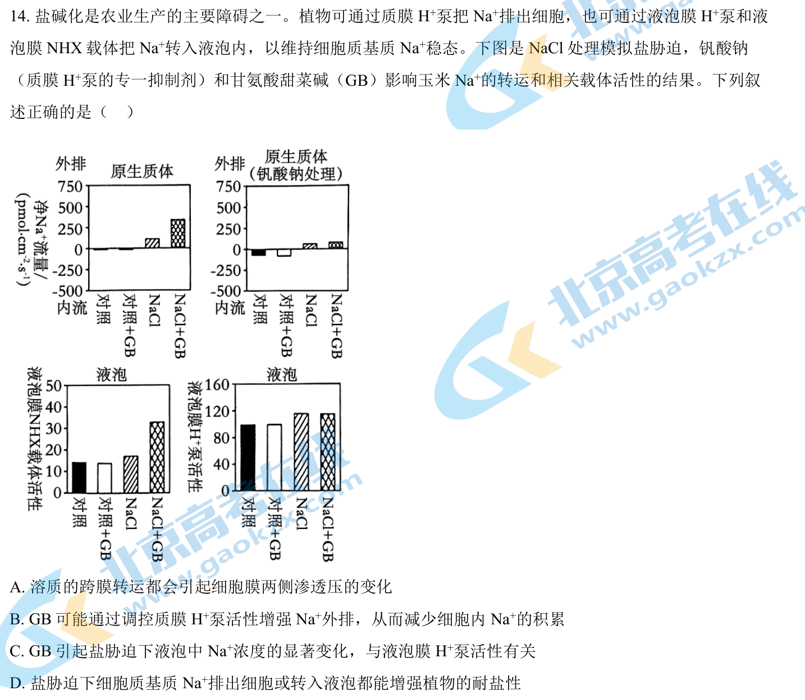
原始配图 1 · 第14题原题图版所用高中知识
排出胞外和隔离进液泡都能降低细胞质基质Na⁺毒害。H⁺泵可提供离子电化学梯度，NHX载体参与Na⁺转运。
读题与思路
盐胁迫+GB净Na⁺外排明显升，质膜H⁺泵抑制剂减弱该效应，B可推。液泡NHX活性升但H⁺泵并未因GB显著升，C归因不符。胞质排Na或隔离入液泡均减毒，D；A忽略对向等量交换等情形，故BD。
分步解析
- 正常质膜在NaCl+GB组Na⁺外排明显增强；钒酸钠抑制质膜H⁺泵后该增强大幅缩小，支持B。
- 液泡图中GB使NHX活性明显增加，而液泡膜H⁺泵活性无显著变化，不能将Na⁺变化归因于该泵活性显著增强，C错误。
- 盐胁迫下两种途径均有助维持细胞质基质低Na⁺，D正确。
- 物质可在动态平衡中双向转运、其他溶质或水分也可补偿，不能说每次转运必然改变膜两侧总体渗透压，A过于绝对。
检查与易错点
质膜H⁺泵与液泡膜H⁺泵处在不同膜；“与转运过程有关”不等于“本次GB效应由其活性变化引起”。
本题来源：paper · doc-supplied · web-current-pdf
返回原卷作答与计分说明
题目与已知条件
（4分）
为精细定位水稻4号染色体上的抗虫基因，用纯合抗虫水稻与纯合易感水稻的杂交后代多次自交，得到一系列抗虫或易感水稻单株。对亲本及后代单株4号染色体上的多个不连续位点进行测序，部分结果按碱基位点顺序排列如下表。据表推测水稻同源染色体发生了随机互换，下列叙述正确的是（ ）
| 测序对象 | …位点1… | …位点2… | …位点3… | …位点4… | …位点5… | …位点6… |
|---|
| 纯合抗虫水稻亲本 | A/A | A/A | A/A | A/A | A/A | A/A |
|---|
| 纯合易感水稻亲本 | G/G | G/G | G/G | G/G | G/G | G/G |
|---|
| 抗虫水稻1 | G/G | G/G | A/A | A/A | A/A | A/A |
|---|
| 抗虫水稻2 | A/G | A/G | A/G | A/G | A/G | G/G |
|---|
| 易感水稻1 | A/G | G/G | G/G | G/G | G/G | A/A |
|---|
示例：A/G表示同源染色体相同位点，一条DNA上为A—T碱基对，另一条DNA上为G—C碱基对。
所用高中知识
亲本差异碱基可作为连锁标记，重组体的表型与保留区段用于缩小目的基因区域。标记碱基本身不一定是致性状的突变。
读题与思路
抗虫1在2/3之间由GG变AA，表明交换；易感1仅能确定5/6附近及1/2相关区段，不能声称2/3交换。抗虫1/2与易感1的差异把候选限制在2至6之间，并与3/4/5相联，故ACD。
分步解析
- 抗虫1在位点1、2为G/G，位点3—6为A/A，提示2—3间发生过交换，A正确。
- 易感1在2—5连续为G/G，不能推断2—3间发生交换；5—6由G/G转A/A可提示交换，B将两处都认定不当。
- 两抗虫单株在3、4、5至少有一份抗虫亲本来源的A，而易感1相应为G/G，支持基因与这些中部标记相关，C正确。
- 抗虫1排除2以前作为必要抗虫来源，抗虫2位点6为G/G而仍抗虫，排除6以后；结合重组边界把目标范围定位在2—6之间，D正确。
检查与易错点
这里只作相对区间定位，不是证明抗虫基因就是某一个A/G碱基本身；位点间的其他DNA仍可能包含实际基因。
本题来源：paper · doc-supplied · web-current-pdf
返回原卷作答与计分说明
题目与已知条件
番茄果实发育历时约53天达到完熟期，该过程受脱落酸和乙烯的调控，且果实发育过程中种子的脱落酸和乙烯含量达到峰值时间均早于果肉。基因NCED1和ACO1分别是脱落酸和乙烯合成的关键基因。NDGA抑制NCED1酶活性，1-MCP抑制乙烯合成。花后40天果实经不同处理后果实中脱落酸和乙烯含量的结果如图所示。下列叙述正确的是（）
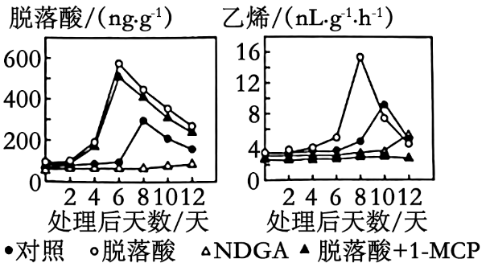
A. 番茄种子的成熟期早于果肉，这种发育模式有利于种群的繁衍
B. 果实发育过程中脱落酸生成时，果实中必需有NCED1酶的合成
C. NCED1酶失活，ACO1基因的表达可能延迟
D. 脱落酸诱导了乙烯的合成，其诱导效应可被1-MCP消除
查看原题图／原始配图
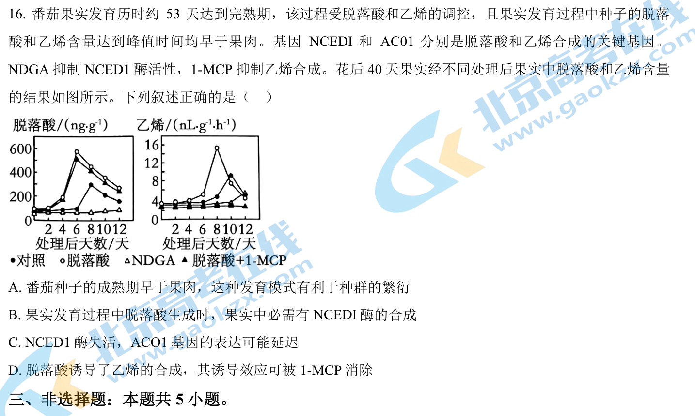
原始配图 1 · 第16题原题图版所用高中知识
基因编码酶，酶催化激素合成；已有酶可以重复催化。种子先成熟再由成熟果肉吸引传播有适应意义。
读题与思路
种子先熟利繁殖，A成立；激素生成可用已有酶，不必同时合新酶，B过强。抑NCED1后ABA峰不现且乙烯延迟，C可能；ABA提前乙烯峰而1-MCP取消，D成立。
分步解析
- 种子激素峰值早、成熟较早，有助传播时种子已具繁殖能力，A正确。
- 脱落酸生成需要NCED1催化，但可使用之前合成的酶，不能断言每次生成时必须同步合成NCED1，B错误。
- NDGA抑制NCED1后，脱落酸及乙烯高峰均受影响，支持ACO1表达可能延迟，C正确。
- 脱落酸处理提高乙烯，而加1-MCP后该提高受抑，说明其诱导效应可被阻断，D正确。
检查与易错点
NCED1酶“存在并有活性”与该时刻“发生新的酶合成”不是同一条件。
本题来源：paper · doc-supplied · web-current-pdf
返回原卷作答与计分说明
题目与已知条件
（12分）
下图是水稻和玉米的光合作用暗反应示意图。卡尔文循环的Rubisco酶对CO2的Km为450μmol·L-1（K越小，酶对底物的亲和力越大）,该酶既可催化RuBP与CO2反应，进行卡尔文循环，又可催化RuBP与O2反应，进行光呼吸（绿色植物在光照下消耗O2并释放CO2的反应）。该酶的酶促反应方向受CO2和O2相对浓度的影响。与水稻相比，玉米叶肉细胞紧密围绕维管束鞘，其中叶肉细胞叶绿体是水光解的主要场所，维管束鞘细胞的叶绿体主要与ATP生成有关。玉米的暗反应先在叶肉细胞中利用PEPC酶（PEPC对CO2的Km为7μmol·L-1）催化磷酸烯醇式丙酮酸（PEP）与CO2反应生成C4,固定产物C4转运到维管束鞘细胞后释放CO2,再进行卡尔文循环。回答下列问题：
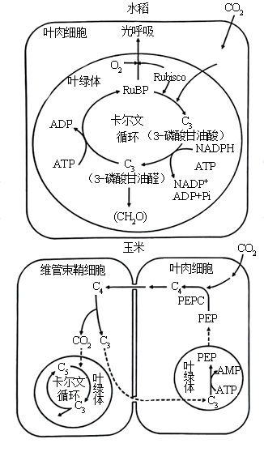
（1）玉米的卡尔文循环中第一个光合还原产物是______（填具体名称）,该产物跨叶绿体膜转运到细胞质基质合成______（填"葡萄糖""蔗糖"或"淀粉"）后，再通过_____长距离运输到其他组织器官。
（2）在干旱、高光照强度环境下，玉米的光合作用强度_____（填"高于"或"低于"）水稻。从光合作用机制及其调控分析，原因是________（答出三点即可）。
（3）某研究将蓝细菌的CO2浓缩机制导入水稻，水稻叶绿体中CO2浓度大幅提升，其他生理代谢不受影响，但在光饱和条件下水稻的光合作用强度无明显变化。其原因可能是________（答出三点即可）。
查看原题图／原始配图
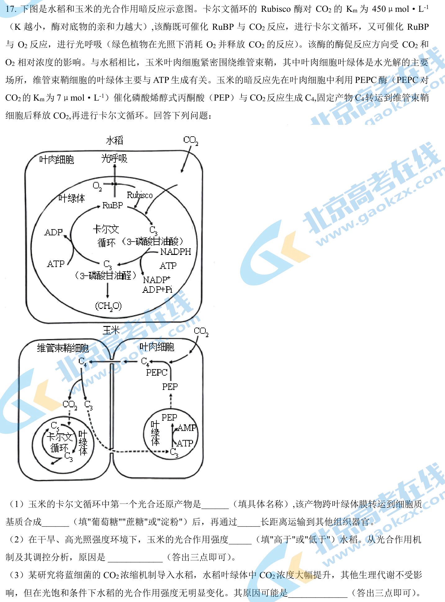
原始配图 1 · 第17题原题图版所用高中知识
卡尔文循环先形成3-磷酸甘油酸，再被ATP和NADPH支持的还原过程转为3-磷酸甘油醛。C₄途径在叶肉先固定、在维管束鞘释放CO₂，形成浓缩效应。
读题与思路
首个还原产物为3-磷酸甘油醛，在胞质合蔗糖经筛管长运。玉米PEPC低Kₘ可低CO₂固定、C₄浓缩提高鞘CO₂，鞘少产氧又减光呼吸，故干旱强光有优势。单浓缩CO₂未增水稻速率还可受光反应ATP/NADPH、暗反应酶或产物输出限制。
分步解析
- 第一个还原产物为3-磷酸甘油醛。进入细胞质基质后主要合成蔗糖，蔗糖通过韧皮部筛管长距离运输。
- 干旱使气孔关闭、CO₂进入少。玉米PEPC的Km=7，远低于Rubisco的450，对低浓度CO₂亲和力高，仍可有效固定。
- C₄物质向维管束鞘运送并放出CO₂，使Rubisco附近CO₂浓度提高；水光解主要在叶肉，鞘细胞局部产O₂少，CO₂/O₂比高，抑制Rubisco加氧和光呼吸，玉米净同化更有利。
- 玉米叶肉围绕维管束鞘，碳固定、利用和产物运输相配合，可及时输出光合产物，减轻产物积累反馈。
- 水稻只提高CO₂仍可能受光反应提供ATP、NADPH的能力限制；受Rubisco等暗反应酶数量/活性或RuBP再生能力限制；受光合产物转运、利用速率限制。任列三条明确限制环节。
答案
（1）3-磷酸甘油醛；蔗糖；韧皮部筛管（维管组织）。（2）高于；PEPC亲和力高、C₄途径浓缩CO₂且鞘细胞产氧少而光呼吸弱、光合产物运输有利等。（3）ATP/NADPH供给有限；暗反应酶活力或RuBP再生有限；光合产物输出利用速率有限。
检查与易错点
“第一个固定产物”不是“第一个还原产物”。末问明确浓缩机制已有效且其他代谢不受影响，不能用“原核真核不同所以导入失败”作解释。
本题来源：paper · revised · doc-supplied · web-current-pdf
返回原卷作答与计分说明
题目与已知条件
（12分）
长时程增强（LTP）是突触前纤维受到高频刺激后，突触传递强度增强且能持续数小时至几天的电现象，与人的长时记忆有关。下图是海马区某侧支LTP产生机制示意图，回答下列问题：
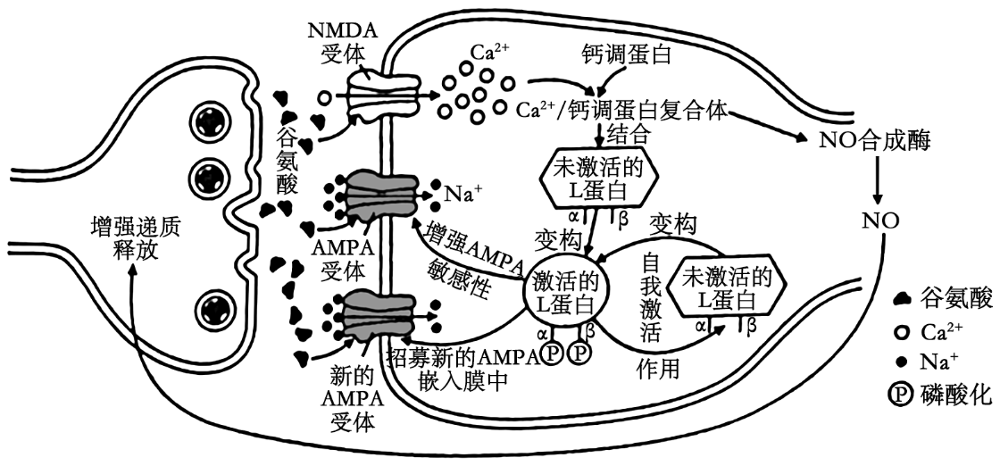
（1）依据以上机制示意图，LTP的发生属于______（填“正”或“负”）反馈调节。
（2）若阻断NMDA受体作用，再高频刺激突触前膜，未诱发LTP，但出现了突触后膜电现象。据图推断，该电现象与______内流有关。
（3）为了探讨L蛋白的自身磷酸化位点（图中α位和β位）对L蛋白自我激活的影响，研究人员构建了四种突变小鼠甲、乙、丙和丁，并开展了相关实验，结果如表所示：
| 组别／项目 | 正常小鼠 | 甲 | 乙 | 丙 | 丁 |
|---|
| 处理 | | α位突变为缬氨酸，该位点不发生自身磷酸化 | α位突变为天冬氨酸，阻断Ca2+/钙调蛋白复合体与L蛋白结合 | β位突变为丙氨酸，该位点不发生自身磷酸化 | L蛋白编码基因缺失 |
|---|
| L蛋白活性 | + | ++++ | ++++ | + | − |
|---|
| 高频刺激 | 有LTP | 有LTP | ? | 无LTP | 无LTP |
|---|
注：“+”多少表示活性强弱，“−”表示无活性。
据此分析：
①小鼠乙在高频刺激后______（填“有”或“无”）LTP现象，原因是______；
②α位的自身磷酸化可能对L蛋白活性具有______作用。
③在甲、乙和丁实验组中，无L蛋白β位自身磷酸化的组是______。
查看原题图／原始配图
原始配图 1
所用高中知识
LTP强调刺激后传递效能的持续增强，不能只由某次测得的蛋白活性大小推断。Ca²⁺/钙调蛋白复合体分别联系L蛋白和NO合成酶两条路径。
读题与思路
NO反馈回前膜促进递质释放为正反馈；阻NMDA仍可经AMPA使Na⁺入流。甲α不能磷酸化而活性高，支持α磷酸化抑制。乙表列L活性++++，不能结合Ca²⁺/钙调蛋白却未说明活性测量条件与β自磷酸化必要条件；NO由Ca²⁺/钙调蛋白另支直接激活。故“乙无LTP、乙无β磷酸化”须额外结合依赖假设，不能由题图无条件证明；丁无L蛋白则确定无β磷酸化。
分步解析
- 谷氨酸引起Ca2+内流，Ca2+/钙调蛋白复合体促进NO合成，NO返回前膜增强递质释放，构成正反馈。
- 阻断NMDA受体后，谷氨酸仍可作用于AMPA受体，引起Na+内流，产生短时的后膜电位变化；但不能诱导LTP。
- 甲的α位不能磷酸化，L蛋白活性由正常的“+”升至“++++”，说明α位磷酸化可能抑制L蛋白活性。
- 乙的α位突变使Ca2+/钙调蛋白不能与L蛋白结合。高频刺激时，L蛋白须先与该复合体结合才能发生β位自身磷酸化并维持持续增强，所以乙虽然L活性高，也不能产生LTP，①为“无”。
- β位自身磷酸化需要L蛋白并以与Ca2+/钙调蛋白结合为前提：丁无L蛋白，乙不能结合，二者均不发生β位自身磷酸化，③为乙、丁。
答案
（1）正。（2）Na+。（3）①无；②抑制；③乙、丁。
检查与易错点
NO合成酶由Ca²⁺/钙调蛋白复合体直接促进，NO分支不经过L蛋白，不能写“乙不与L结合，所以不能合成NO”。乙的L活性“++++”不代表能产生LTP：LTP需要高频刺激后Ca²⁺/钙调蛋白与L结合并引发β位自身磷酸化，乙恰恰缺少这一步。
本题来源：paper · revised · doc-supplied · web-current-pdf · originalscan
返回原卷作答与计分说明
题目与已知条件
（12分）
基因检测是诊断和预防遗传病的有效手段。研究人员采集到一遗传病家系样本，测序后发现此家系甲和乙两个基因存在突变：甲突变可致先天性耳聋；乙基因位于常染色体上，编码产物可将叶酸转化为N5-甲基四氢叶酸，乙突变与胎儿神经管缺陷（NTDs）相关；甲和乙位于非同源染色体上。家系患病情况及基因检测结果如图所示。不考虑染色体互换，回答下列问题：
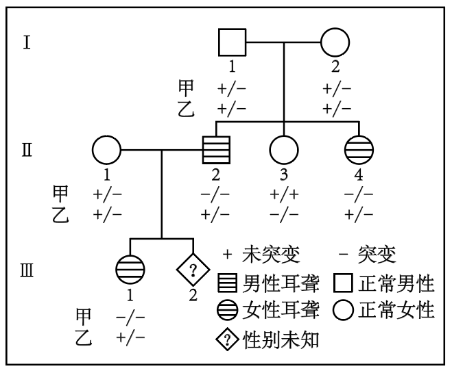
（1）此家系先天性耳聋的遗传方式是______。Ⅰ-1和Ⅰ-2生育一个甲和乙突变基因双纯合体女儿的概率是______。
（2）此家系中甲基因突变如下图所示：
正常基因单链片段5′-ATTCCAGATC……（293个碱基）……CCATGCCCAG-3′
突变基因单链片段5′-ATTCCATATC……（293个碱基）……CCATGCCCAG-3′
研究人员拟用PCR扩增目的基因片段，再用某限制酶（识别序列及切割位点为）酶切检测甲基因突变情况，设计了一条引物为5′-GGCATG-3′，另一条引物为______（写出6个碱基即可）。用上述引物扩增出家系成员Ⅱ-1的目的基因片段后，其酶切产物长度应为______bp（注：该酶切位点在目的基因片段中唯一）。
（3）女性的乙基因纯合突变会增加胎儿NTDs风险。叶酸在人体内不能合成，孕妇服用叶酸补充剂可降低NTDs的发生风险。建议从可能妊娠或孕前至少1个月开始补充叶酸，一般人群补充有效且安全剂量为0.4～1.0 mg·d−1，NTDs生育史女性补充4 mg·d−1。经基因检测胎儿（Ⅲ-2）的乙基因型为−/−，据此推荐该孕妇（Ⅱ-1）叶酸补充剂量为______mg·d−1。
查看原题图／原始配图
原始配图 1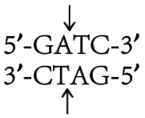
原始配图 2 所用高中知识
父母正常、女儿患病支持常染色体隐性遗传。PCR两引物分别与相对链配对，延伸方向均为5′→3′，两3′端朝向扩增片段内部。
读题与思路
正常父母携带、患病女儿双突变说明甲常隐。双纯合女儿=1/4×1/4×1/2=1/32。反向引物GGCATG确定右边界，正向ATTCCA；扩增长10+293+7=310bp。正常等位切成8+302，突变不切，Ⅱ-1杂合共310/302/8三带。叶酸空按母亲乙+/-且无NTDs史的题给标准0.4–1.0，不以胎儿或耳聋替代母亲条件。
分步解析
- Ⅰ-1、Ⅰ-2甲基因均+/−且女儿−/−患病，判常隐。乙也均+/−，两基因独立分配，双突变纯合女儿概率1/4×1/4×1/2=1/32。
- 已给反向引物5′-GGCATG-3′结合右端5′-CATGCC-3′对应区域（末端10个碱基的第2—7位）；左端正向引物应与所示链5′端相同，即5′-ATTCCA-3′，它结合的是互补链。
- 扩增片段从左端1到右端第7位（右端前7个碱基CCATGCC），总长10+293+7=310 bp。正常片段含GATC切位，可得8和302 bp；突变片段TATC不切。
- Ⅱ-1为甲基因+/−，两种扩增产物同时存在，故条带长度应为310、302、8 bp。不能漏掉未被切开的突变片段。
- 叶酸用量应看孕妇Ⅱ-1本人，乙为+/−、无所给NTDs生育史；Ⅲ-1耳聋不是NTDs病史，胎儿Ⅲ-2乙−/−也不是母亲双突变。故在本题条件下选一般人群0.4—1.0 mg/d。
答案
（1）常染色体隐性遗传；1/32。（2）5′-ATTCCA-3′；310、302、8 bp。（3）0.4—1.0 mg/d。
检查与易错点
引物不是把ATTCCA直接逐位互补后仍按5′→3′写成TAAGGT。题干说的是“女性的乙基因纯合突变”增加风险，胎儿−/−不等于孕妇−/−；Ⅱ-1为+/−且无NTDs生育史，按一般人群剂量补充。
本题来源：paper · revised · doc-supplied · web-current-pdf
返回原卷作答与计分说明
题目与已知条件
（11分）
濒危植物云南红豆杉（以下称红豆杉）是喜阳喜湿高大乔木，郁闭度对其生长有重要影响。研究人员对某区域无人为干扰生境和人为干扰生境的红豆杉野生种群开展了调查研究。选择性采伐和放牧等人为干扰使部分上层乔木遭破坏，但尚余主要上层乔木，保持原有生境特点。无人为干扰生境下红豆杉野生种群年龄结构的调查结果如图所示。回答下列问题：
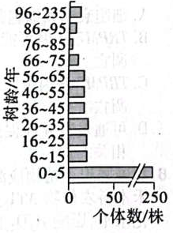
无人为干扰生境下红豆杉野生种群年龄结构（1）调查红豆杉野生种群密度时，样方面积最合适的是______（填“1”“20”或“400”）m2，理由是______。由图可知，无人为干扰生境中红豆杉种群年龄结构类型为______。
（2）调查发现人为干扰生境中，树龄≤5年幼苗的比例低于无人为干扰生境，可能的原因是______。分析表明，人为干扰生境中6～25年树龄红豆杉的比例比无人为干扰生境高11%可能的原因是______。选择性采伐与红豆杉生态位重叠度______（填“高”或“低”）的部分植物，有利于红豆杉野生种群的自然更新。
（3）关于红豆杉种群动态变化及保护的说法，下列叙述正确的是______。
①选择性采伐和放牧等会改变红豆杉林的群落结构和群落演替速度
②在无人为干扰生境中播撒红豆杉种子将提高6～25年树龄植株的比例
③气温、干旱和火灾是影响红豆杉种群密度的非密度制约因素
④气候变湿润后可改变红豆杉的种群结构并增加种群数量
⑤保护红豆杉野生种群最有效的措施是人工繁育
查看原题图／原始配图
原始配图 1 · 年龄结构原图；题文根据两种公开题面交叉校对，第（1）问保留原来的选填要求。
所用高中知识
样方面积取决于植物体型和分布密度。年龄结构幼龄个体多可判增长型，但未来更新还受光、水、干扰等制约。
读题与思路
高大稀疏乔木需400m²样方，幼龄多的图为增长型。干扰使幼苗受放牧啃食踩踏，却减郁闭利6–25年个体受光更新；竞争生态位重叠高者适度移除有利。非密度因素及湿润改善支持③④，群落结构/演替速度变化支持①。
分步解析
- 红豆杉高大且稀少，400 m²的大样方较能包含足够个体并代表分布，减少过小样方误差；图示幼龄比例较高，为增长型。
- 放牧可啃食、踩踏幼苗，采伐也可伤及幼苗并降低土壤保湿，因此≤5年比例降低。
- 适度降低林冠郁闭度增加光照，喜阳的6—25年个体受益，比例相对提高。选择与红豆杉生态位重叠高的部分植物可减轻资源竞争。
- ①人为干扰会改变结构和演替速度；③气温、干旱、火灾属非密度制约因素；④喜湿物种在适当增湿条件下数量和结构可改善，均正确。
- ②只播种不能保证6—25年组比例立刻或必然提高；⑤最有效保护通常为就地保护其种群及生境，不是只人工繁育。
答案
（1）400 m2；高大、濒危、分布稀疏，需较大样方；增长型。（2）幼苗遭啃食踩踏等；郁闭度下降增加光照利于较大幼树；高。（3）①③④。
检查与易错点
增长型年龄结构是潜在趋势，不能忽视大量幼苗后续死亡。比例改变不必等同于该年龄组绝对数量同幅改变。
本题来源：paper · revised · originalscan · doc-supplied · web-current-pdf
返回原卷作答与计分说明
题目与已知条件
（13分）
某些植物根际促生菌具有生物固氮、分解淀粉和抑制病原菌等作用。回答下列问题：
（1）若从植物根际土壤中筛选分解淀粉的固氮细菌，培养基的主要营养物质包括水和____。
（2）现从植物根际土壤中筛选出一株解淀粉芽孢杆菌H，其产生的抗菌肽抑菌效果见表。据表推测该抗菌肽对________的抑制效果较好，若要确定其有抑菌效果的最低浓度，需在________μg·mL-1浓度区间进一步实验。
| 测试菌 | 抗菌肽浓度/（µg•mL-1） |
| 55.20 | 27.60 | 13.80 | 6.90 | 3.45 | 1.73 | 0.86 |
| 金黄色葡萄球菌 | - | - | - | - | - | + | + |
| 枯草芽孢杆菌 | - | - | - | - | - | + | + |
| 禾谷镰孢菌 | - | + | + | + | + | + | + |
| 假丝酵母 | - | + | + | + | + | + | + |
注：“+”表示长菌，“-”表示未长菌。
（3）研究人员利用解淀粉芽孢杆菌H的淀粉酶编码基因M构建高效表达质粒载体，转入大肠杆菌成功构建基因工程菌A。在利用A菌株发酵生产淀粉酶M过程中，传代多次后，生产条件未变，但某子代菌株不再产生淀粉酶M。分析可能的原因是______（答出两点即可）。
（4）研究人员通过肺上皮干细胞诱导生成肺类器官，可自组装或与成熟细胞组装成肺类装配体，如图所示。肺类装配体培养需要满足适宜的营养、温度、渗透压、pH以及_____（答出两点）等基本条件。肺类装配体形成过程中是否运用了动物细胞融合技术___（填“是”或“否”）。
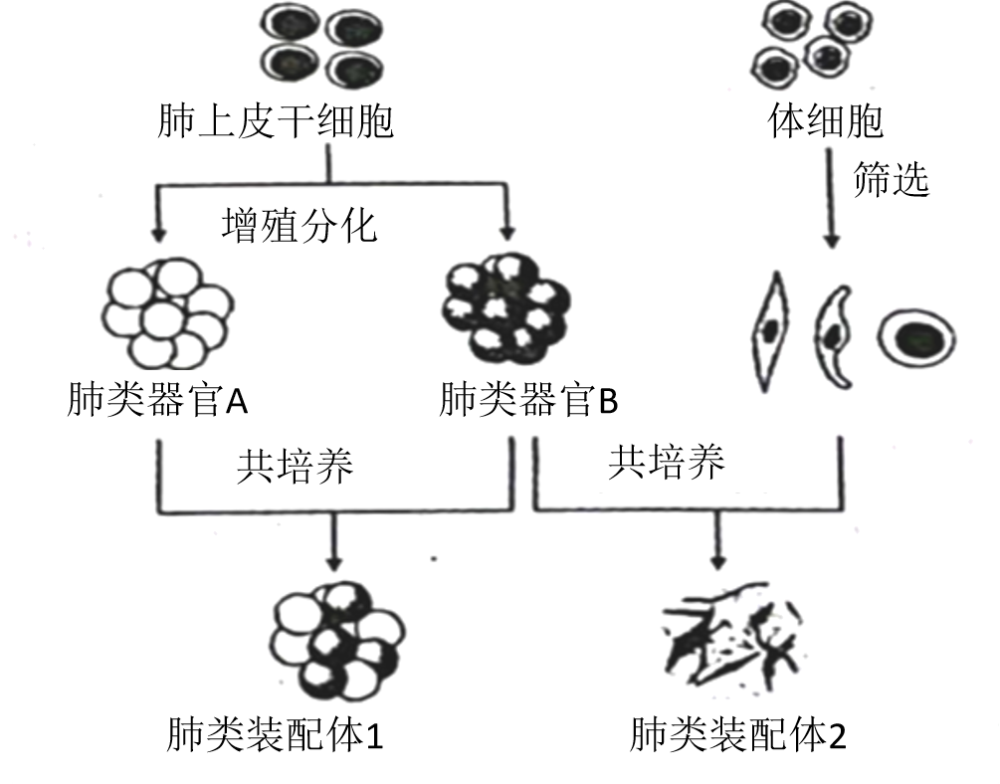
（5）耐甲氧西林金黄色葡萄球菌（MRSA）是一种耐药菌，严重危害人类健康。科研人员拟用MRSA感染肺类装配体建立感染模型，来探究解淀粉芽孢杆菌H抗菌肽是否对MRSA引起的肺炎有治疗潜力。以下实验材料中必备的是______。
①金黄色葡萄球菌感染的肺类装配体 ②MRSA感染的肺类装配体③解淀粉芽孢杆菌H抗菌肽 ④生理盐水 ⑤青霉素（抗金黄色葡萄球菌的药物）⑥万古霉素（抗MRSA的药物）
查看原题图／原始配图
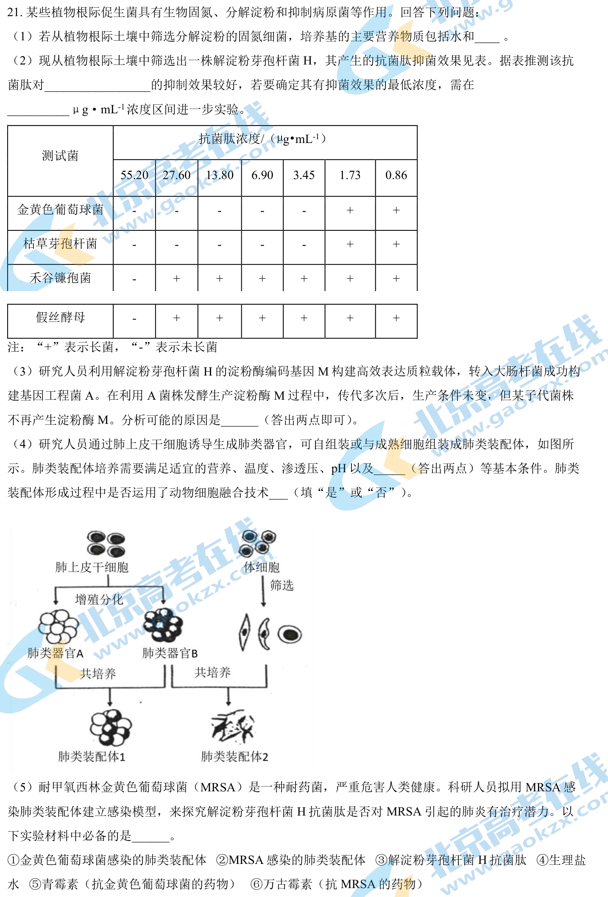
原始配图 1 · 第21题原题图版所用高中知识
选择培养基用限定碳源、不给结合态氮来富集兼有淀粉分解与固氮能力的菌。抑菌最低浓度需在生长与不生长的相邻浓度间细化。
读题与思路
固氮+淀粉分解菌可在无氮、淀粉唯一碳源的培养基筛选，主要再需无机盐。表中两细菌的抑制阈值在1.73–3.45μg/mL；质粒丢失或表达元件突变可失酶。类器官共培养不等于细胞融合；培养还需无菌无毒、适宜气体。MRSA模型需②、抗菌肽③、盐水④及有效阳药万古霉素⑥。
分步解析
- 培养基以淀粉为主要/唯一碳源，提供无机盐和水，不额外加结合态氮，让固氮菌利用空气N₂。
- 金黄色葡萄球菌和枯草芽孢杆菌在3.45 μg/mL即不长，而两种真菌要到55.20才不长，前两者抑制效果较好。最低有效浓度位于1.73与3.45之间，需加设梯度重复验证。
- 传代后不再产酶，可因重组质粒丢失，M基因或其启动子等关键表达元件突变；列两条独立原因即可。
- 动物细胞培养还需无菌无毒环境、适宜气体环境（如95%空气和5%CO₂）。细胞自组装成类器官/装配体不是细胞膜融合，不属于动物细胞融合技术。
- 实验组用MRSA感染装配体+抗菌肽；阴性对照用相同模型+盐水，阳性对照用相同模型+万古霉素。故必备②③④⑥，控制剂量、时间、感染程度等并比较感染/损伤指标。
答案
（1）无机盐、淀粉。（2）金黄色葡萄球菌、枯草芽孢杆菌；1.73—3.45 μg/mL。（3）质粒丢失；M基因或关键表达元件发生突变等。（4）无菌无毒环境、适宜气体环境；否。（5）②③④⑥。
检查与易错点
“-”是未长菌，不能反着读成无抑制。普通金黄色葡萄球菌不能替代MRSA模型；青霉素不是本题对耐甲氧西林菌株的合适阳性药物对照。
本题来源：paper · revised · doc-supplied · web-current-pdf
题源与核验说明
- 2023年高考真题——生物（湖南卷） Word版无答案.doc所附参考资料；SHA-256：b75b2945a45c9a612c121cbe59bc2c06f2f652241333e5fa8e00a45a685f0d71
- alternate-scanpdf.pdf原卷文件；SHA-256：8d0ec65fe72ddafa668781f0a0261995f5f3f2b260c75293de673465fe705e71
- 2023湖南生物印刷题面与参考解析PDF9页印刷图PDF，前4页覆盖全部21题，后附参考仅作比较。与下列原题页面的9张印刷图对应。
- 2023湖南生物题目修订参考答案2023-06-21公开修订参考用于事后比较。18题的乙无LTP/乙丁结论须额外机制假设；19题引物与条带经独立定位计算，未把参考当官方答案。
- 高考直通车：2023湖南生物题面印刷扫描前4张印刷题面覆盖1—21题。第3题为30%～50%，部分Word转录为30%；第15题表下示例注释已补齐；第20题保留面积选填空。